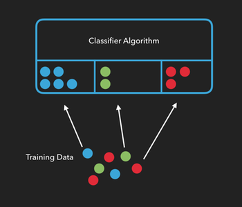
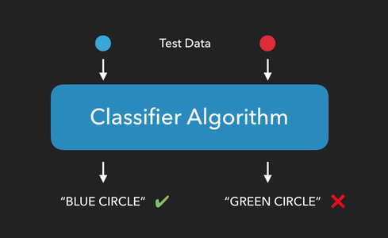

01 Prove : Assignment - Classifier Intro
Overview
In this assignment you will write a basic data classification harness that we'll be using in future assignments.
More than anything, the purpose of this assignment is to make sure you have the pieces in place to be successful in future assignments. Next week, we will implement an actual classifier that will make use of the framework you put in place here.
Objectives
Classification Algorithms
Imagine that you're a big fan of comic books. Over the years, you've read enough Marvel and DC comics that if I asked you to "classify" which universe Superman belonged to, you'd be able to confidently say, "The DC Universe".
Or, let's say you've eaten a lot of chocolate in your life. If I were to have you close your eyes and take a bite of chocolate, you might be able to accurately tell me if it was white chocolate, milk chocolate, semi-sweet, or dark.
These are both classification problems. Based on your prior knowledge or training regarding different groups, you can take an item and sort it into the correct group.
In machine learning, classification algorithms, (or classifiers), need to be trained before they can classify things on their own. We can train an algorithm by providing it with lots of examples from each group and telling it which attributes of those samples are important. The more examples we use to train our algorithm, the more accurate the classification of new items will be.
In the example below, we’re telling the algorithm “this is what a blue circle looks like", or "this is what a green circle looks like", etc...
Once an algorithm has been trained, we can see how well it performs by providing it with test data consisting of new items it hasn't seen yet, and checking to see if it can correctly predict which group the new items belong to.
The Iris Dataset
About the data
For this assignment, we'll be using Fisher's Iris dataset. [1]
The Iris dataset contains the length and width of the sepals and petals from 150 iris flowers across three different species of iris: Iris setosa, Iris versicolor, and Iris virginica.
Each row in the Iris dataset represents the measurements of a single flower. We refer to each of these as a sample, observation, or instance.
Each column in the Iris dataset represents a particular thing being measured about each flower. From left to right we have (in centimeters) the sepal length, the sepal width, the petal length, and the petal width. Each of these is referred to as a feature, attribute, measurement, or dimension.
The final column in the dataset is the species of the flower. This final column is often referred to as the target or class of the sample.
Classifiers
Classifier algorithms generally follow the same set of steps. Our goal is to create a classifier that can be provided with the measurements of petals and sepals, and then use that information to predict the species of iris flower we're measuring.
Load the Data
The first thing we need to do is load our data. In most cases, there is some pre-processing that has to be done on the data in order to get it to the point where we can start working with it. In this case however, the data is provided to you in the exact format you need:
sepal_length sepal_width petal_length petal_width species
0 5.1 3.5 1.4 0.2 Iris-setosa
1 4.9 3.0 1.4 0.2 Iris-setosa
2 4.7 3.2 1.3 0.2 Iris-setosa
3 4.6 3.1 1.5 0.2 Iris-setosa
4 5.0 3.6 1.4 0.2 Iris-setosa
.. ... ... ... ... ...
145 6.7 3.0 5.2 2.3 Iris-virginica
146 6.3 2.5 5.0 1.9 Iris-virginica
147 6.5 3.0 5.2 2.0 Iris-virginica
148 6.2 3.4 5.4 2.3 Iris-virginica
149 5.9 3.0 5.1 1.8 Iris-virginica
The csv file for the iris data can be found here. There are many ways to load data from a csv file, but one handy way is to use the read_csv function from the Pandas library:
import pandas as pd
url = "https://byui-cs.github.io/cs450-course/week01/iris.data"
data = pd.read_csv(url)
Split the Data
Next, we'll randomly divide all of the samples into two groups. The first group will consist of our training data, or the samples we'll use to train our classifier. The second group will consist of our test data, the data we'll use to test our classifier.
There are many ways to do this, but if have our features (sepal and petal measurements) and targets (species names) in separate arrays, we can use the train_test_split function of the sklearn library to do this for us:
from sklearn.model_selection import train_test_split
#...
# Randomize and split the samples into two groups, 30% of the samples will be used for testing.
# The other 70% will be used for training.
train_data, test_data, train_targets, test_targets = train_test_split(iris.data, iris.target, test_size=.3)
You could also use python's built in libraries to randomly shuffle the data, and then use array slicing to split the data into test and training subsets. However if you do, make sure you do it in such a way that you still know which species goes with each set of measurements.
Train the Classifier
By providing the algorithm with training data, we allow it to create relationships between the features of a sample and its class. In the case of the Iris data set, we're training our algorithm on how a given set of sepal and petal measurements correlate to the flower's species.
sklearn has a classifier called GaussianNB which we can use to demonstrate this. GaussianNB is a "Naïve Bayes" classifier that assumes two things about our data:
That the underlying features follow a continuous, normal distribution. (The Gaussian part)
That each feature is statistically independent of every other feature. (The Naïve part)
Do you think both of these assumptions are true for the Iris data?
To train our classifier, first we create an instance of it, then we use the fit method to teach it about our data:
from sklearn.naive_bayes import GaussianNB
#...
classifier = GaussianNB()
classifier.fit(train_data, train_targets)
Test the Classifier
Now that our classifier has been trained on how to classify iris flowers, it's time to test it to see if it can correctly predict the species of flower from a set of measurements.
Note that it's very important when testing our algorithm that we only test it on data that was not used to train it. Otherwise, we're only testing it's ability to remember training data. This is why we split the data into two groups.
To test our classifier, we'll use the predict method and provide it with our test data. This method will return a list of predicted targets, one for each sample in the test data.
In our case, we'll give it a list of petal and sepal measurements it has never seen before, and it will return a list of species predictions, on prediction for each sample in our test data:
#...
targets_predicted = classifier.predict(test_data)
Assess the Classifier's Performance
Since we already know which type of iris each sample in the test data corresponds to, we can compare the predictions made by the classifier to the sample's actual species and calculate how well our algorithm performs.
If m is the number of correct predictions made, and n is the total number of samples in our test data, then accuracy can be calculated as:
$$ accuracy = \frac{m}{n} $$
So if our test data has 20 samples and the classifier predicts the correct flower species for 15 of them, then we would say our algorithm has an accuracy of 75%.
(Note that accuracy isn't actually a great metric to use for evaluating classification algorithms. We'll be looking at a few alternatives next week.)
Summary
To summarize: we take our dataset and divide it in two parts: training data and test data. We use the training data to train the classifier to make classifications, then we use the test data to test how well our classifier performs.
If we have an classifier that performs well, we can use it with new data, samples whose groups we don't know ahead of time, and the accuracy metric will give us some idea of how reliable those predictions are.
If our classifier performs poorly, we either need to provide it with more training data, modify or replace it, or select a different set of attributes to use as features.
Write Your Own Classifier
Now that you understand how classifiers work, in this assignment you'll write your own, extremely stupid, classifer.
This classifer will ignore all training data you provide it, and when making predictions, will always predict 'Iris-setosa'.
The goal is to build the data pipeline and classifier structure this week. Then next week, you'll modify the classifier to be smarter.
Remember: While you are free to search for things like: how do I load a csv file in python, you need to make sure you completely understand every line of code that you write. Also, searching for things like: how do I write a classifier in python, crosses the line into plagiarism.
You are welcome to structure this project in a different way, so long as it meets the requirements outlined below, but the following is a recommended set of steps you might follow:
Randomly sort the list of samples, then split the data up into training data and test data. (I would recommend putting 70% of your data into the training dataset)
-
Create a class called
HardCodedClassifier. -
Add a
fitmethod to the class that takes the training data and a list of targets and saves those as member variables.def train(self, data, targets): -
Add a
predictfunction to the class that takes the test data, and saves it as a member variable. This function will return a list of predictions, one for each sample in the test data.def predict(self, data):As mentioned earlier, in a normal classifier, we would use the
fitmethod to train the classifier, then thepredictmethod would return a list of predictions for each item in the test data using some kind of machine learning algorithm.However, for this assignment we're creating a really stupid classifier, just to make sure we can load and process data correctly. So this week, have the
predictmethod return 'Iris-setosa'as the prediction for each sample.In other words, if my classifier had 30 samples in the test data,
themethod would return a list containing 30 entries of"Iris-setosa". -
Finally, take the list of predictions and compare them to the actual targets of the test data in order to generate an accuracy score. In my example, if half of the samples in the test data really were "Iris-setosa", the accuracy score should be 50% (since the classifier predicted "Iris-setosa" for every sample).
$$ accuracy = \frac{m}{n} $$
Opportunities to go above and beyond:
Have your
fitmethod dynamically assign numeric labels to the targets and use those labels for its predictions.Add command line parameters to allow the user to specify various parameters of an experiment (e.g., what dataset to use, what algorithm to use, what percentage to use to split the training/testing data), etc...
Add n-fold cross validation
Any other ideas you have
Submission
When complete, you need to upload two things (possibly more than two files) to I-Learn:
Download the assignment submission form, answer its questions and upload this form to I-Learn.
-
You will then need to submit your source code.
If you used a Jupyter Notebook, you should not submit that directly. Instead, upload it to a github repository and submit a link to that file.
If you used a Jupyter Notebook in Google Colaboratory, you can save a copy directly from there to GitHub (Click
File -> Save a copy in GitHub...Alternatively, if you used a Jupyter Notebook using Anaconda, do not upload the .ipynb file directly, instead, please export the file to HTML (Click
File -> Download as... -> Html). Then, upload the HTML file to I-learn.Finally, if you used a regular
.pysource file, you can submit that (or a link to it from GitHub) directly to I-Learn. If you used Google Colaboratory, you can save the notebook as a.pyfile by clickingFile -> Download as .py